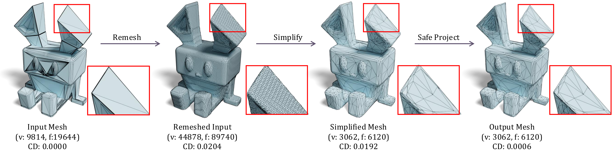

Reducing the triangle count in complex 3D models is a basic geometry preprocessing step in graphics pipelines such as efficient rendering and interactive editing. However, most existing mesh simplification methods exhibit a few issues. Firstly, they often lead to self-intersections during decimation, a major issue for applications such as 3D printing and soft-body simulation. Second, to perform simplification on a mesh in the wild, one would first need to perform re-meshing, which often suffers from surface shifts and losses of sharp features. Finally, existing re-meshing and simplification methods can take minutes when processing large-scale meshes, limiting their applications in practice. To address the challenges, we introduce a novel GPU-based mesh optimization approach containing three key components: (1) a parallel re-meshing algorithm to turn meshes in the wild into watertight, manifold, and intersection-free ones, and reduce the prevalence of poorly shaped triangles; (2) a robust parallel simplification algorithm with intersection-free guarantees; (3) an optimization-based safe projection algorithm to realign the simplified mesh with the input, eliminating the surface shift introduced by re-meshing and recovering the original sharp features. The algorithm demonstrates remarkable efficiency, simplifying a 2-million-face mesh to 20k triangles in 3 seconds on RTX4090. We evaluated the approach on the Thingi10K dataset and showcased its exceptional performance in geometry preservation and speed.



TBD